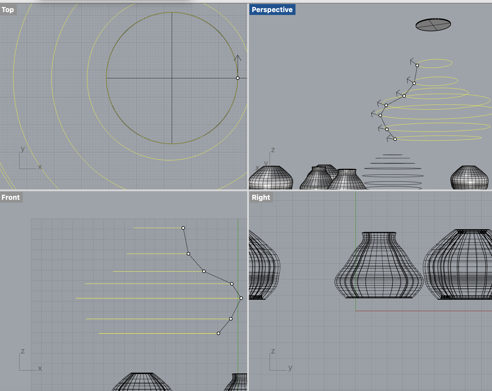

A6: Lamp Part 2
Click on the images below to download the rhino files:
The star fragment lamp was difficult to print with where my skill sets were at, and the amount supports it took to print the geometry gave me a hard time. So I settled with a simplier design.
I created a tube that would hold onto the innards of the lamp base, I then created a bottom heavy bulb incasing so it would be easier to print
The lightbulb cover, I put a series of circles on top of one another then used the loft tool and offset function to create a printer friendly shape

Here are the prints of the base and bulb encasements. The tube part holds onto the lamp base.

Here's the final product, the lightbult encasing is then placed into the tube, as the geometry of the tube supports it